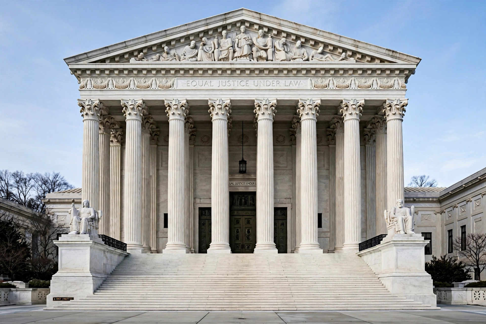

| Citation | 530 U.S. 428 (2000) |
|---|---|
| Decided | 26 June 2000 |
| Full name | Charles Thomas Dickerson v. United States |
| Chief Justice | William Rehnquist (author) |
| Decision | 7–2 |
| Holding | Miranda v. Arizona announced a constitutional rule that Congress may not supersede by legislation. |
| Dissent | Scalia, joined by Thomas |
Dickerson v. United States, 530 U.S. 428 (2000), is a United States Supreme Court case that upheld the requirement that law enforcement officers advise detained suspects of their rights before custodial interrogation, as established in Miranda v. Arizona (1966). The Court held that Miranda announced a rule of constitutional law, and therefore that Congress lacked the power to overrule it by statute.
In the Omnibus Crime Control and Safe Streets Act of 1968, Congress enacted 18 U.S.C. § 3501, which made the admissibility of confessions in federal prosecutions turn on their voluntariness under the totality of the circumstances, with the giving of Miranda warnings treated as merely one factor. The provision was widely understood as an attempt to legislatively overturn Miranda, but for three decades the Justice Department declined to rely on it, regarding it as unconstitutional.
Charles Dickerson was indicted for bank robbery and related offences. He moved to suppress statements made to investigators, arguing he had not received Miranda warnings. The district court suppressed the statements; the Fourth Circuit reversed, invoking § 3501 — a statute neither party had pressed — and holding the statements admissible because they were voluntary. Because the United States itself agreed with Dickerson that Miranda governed, the Supreme Court appointed an amicus curiae, former prosecutor Paul Cassell, to defend the Fourth Circuit's judgment.
Chief Justice William Rehnquist, long a critic of Miranda, wrote the opinion of the Court, joined by six colleagues. The Court held that Miranda and its progeny governed the admissibility of statements made during custodial interrogation in both state and federal courts, and that "Miranda announced a constitutional rule" which Congress could not supersede legislatively. Applying the doctrine of stare decisis, the Court added that "Miranda has become embedded in routine police practice to the point where the warnings have become part of our national culture." Section 3501 was therefore unconstitutional.
Justice Antonin Scalia, joined by Justice Clarence Thomas, dissented, arguing that Miranda itself was wrongly decided and that the majority's holding improperly insulated it from democratic revision.
Dickerson settled the constitutional status of Miranda warnings, ending decades of uncertainty about whether they were a constitutional requirement or merely a prophylactic rule subject to congressional modification. It stands as an important precedent on the limits of Congress's power to alter constitutional interpretations announced by the Court.
From Wikipedia, the free encyclopedia.